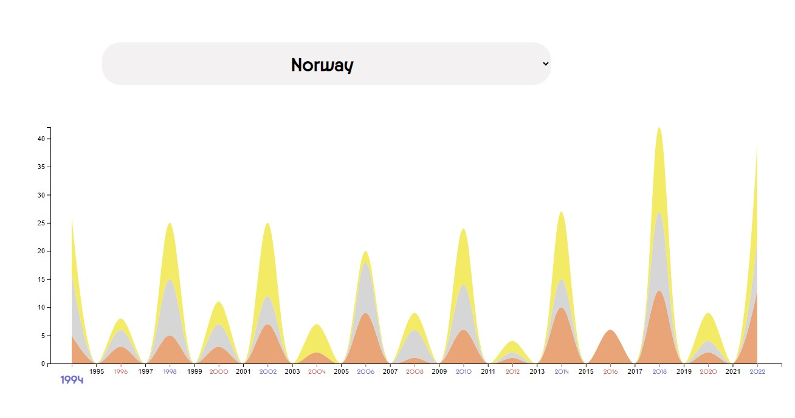
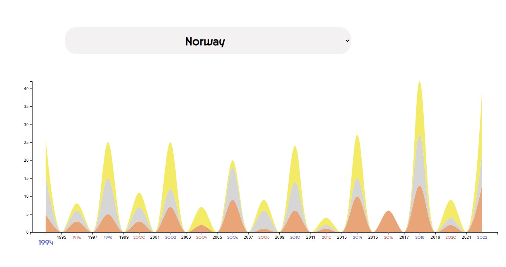

DataVIz
Role
Conception, UI, Web-Front
Technologies
HTML, CSS, JavaScript, D3
Type
Educational project
Year
2023 October-November
Description
One of the key projects in the development during the third semester of my studies was a data visualization project using the D3 library. For this project, we needed to find or gather data on any topic and present it in the form of charts using JavaScript. Ideally, this representation should be interactive.
There were no specific design requirements for the project. The site should function correctly on the desktop version for screens larger than 1024 pixels.
As Paris is the host city for the 2024 Olympic Games, I proposed the theme of statistics on the number of Olympic medals for the project. This site not only provides factual information about medals in different years for each nation, the overall medal standings of countries and athletes, but also includes an analytical element, presenting the ratio of medals won by countries hosting the Olympic Games.
All data presented on the page, through JavaScript filters and sorting, is generated from a single file containing the names and surnames of all Olympic winners, their sport, country, medal quality, and the year of victory.
Coding this responsive stream graph was the most challenging part of the project, as there were relatively few online resources dedicated to this type of diagram.
The site's design was aligned with the Paris Olympic campaign to demonstrate a direct connection between these two projects.
 
